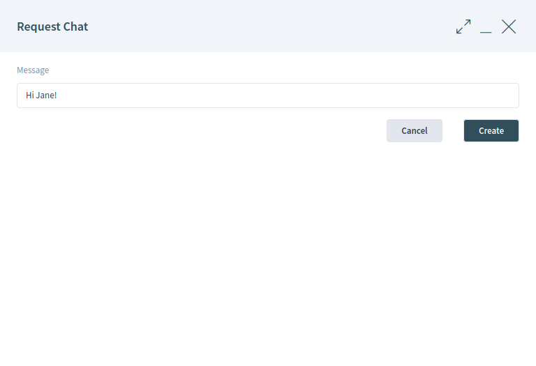
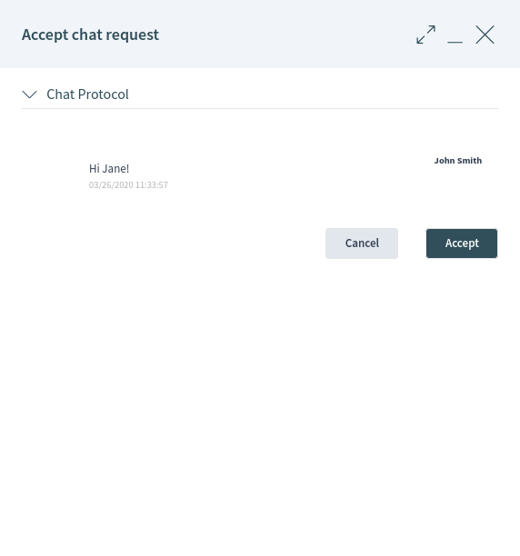
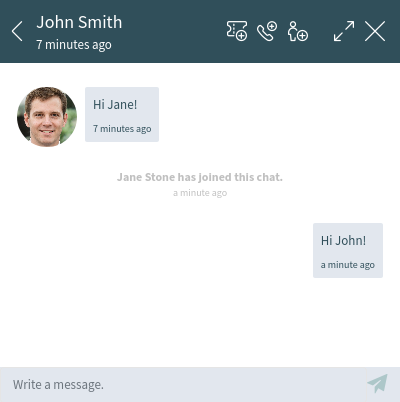
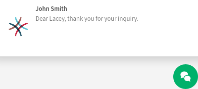
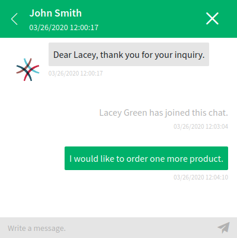
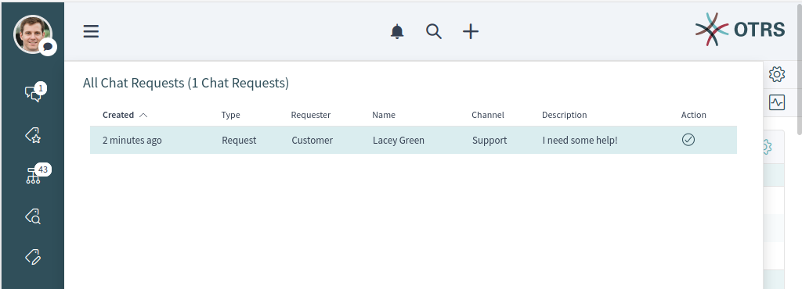
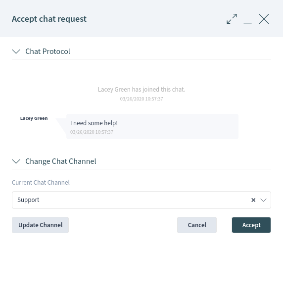
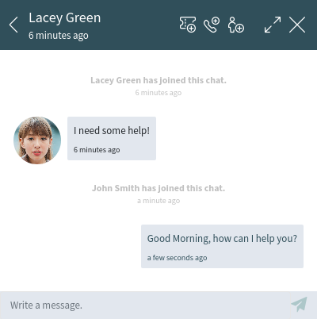
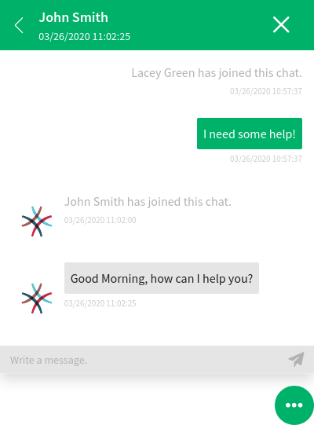
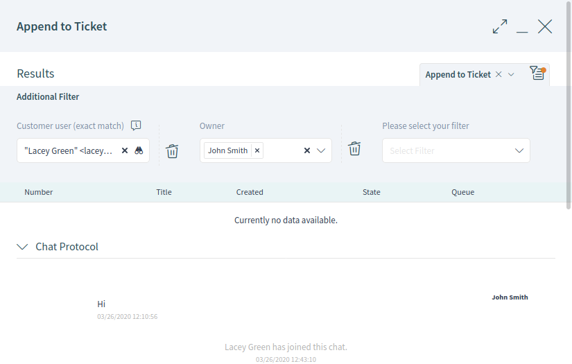

Chat¶
The chat feature allows for chats between agents and customers using the OTRS front end. Once enabled, customers or public users can start chats with agents and vice versa. Finished chats can be archived and attached to tickets or can be downloaded as PDF by agents, customers and public users.
Each chat is assigned to a chat channel. Chat channels are like chat rooms. Each chat channel is assigned to a certain group which controls the permissions for this channel. If no chat channel is selected when a chat is created, this chat will be created in the Default channel.
Chat Availability¶
To be able to use chats, the chat availability needs to be set in the Personalization menu. In order to accept incoming chat requests from customer users, one or more chat channels must be selected in the My Chat Channels field of the Notification Settings.
The People widget shows the online and the chat availability status for agents and customer users and on a third card the users that are out of office.
People Widget
Every user has a colored circle icon after his/her name in the People widget, which represents the participant availability.
- Green circle
- The user is online, and available for chats.
- Yellow circle
- The user is away, there was no request sent to the server from this user for some time.
- Pink circle
- The user is inactive. Chat request is not accepted yet or the participant left the chat.
- Red circle
- The user is set as unavailable for chats in the Personalization menu.
- Black circle
- The user has logged out or session has expired.
Chat Request List¶
The chat request list displays chat requests from customer users, public users and other agents and chat invitations from other agents. The list is accessible by hovering over the chat symbol in the organizer sidebar.
Chat Request List
To accept the chat request, click on the Accept icon in the Action column.
Start New Chat¶
A chat participant can be an agent, a customer user or a public user.
Agent to Agent¶
To start a chat with another agent:
Use the People widget in the dashboard. Agents who are able to use the chat, will have a chat icon next to their name.
Available Agents
Click on the chat icon next to an agent name.
Type an initial message in the Request Chat dialog and click on the Create button to send the message.
Request Chat Dialog
After the chat request has been sent to the other agent, watch the chat indicator in the organizer sidebar. A browser notification is displayed to inform the other agent.
Wait for the answer. The other agent has to accept the chat request with the Accept button.
Accept Chat Request Dialog
When the other agent accepts the chat request, you can chat now.
Agent to Agent Chat
Agent to Customer User¶
To start a chat with a customer user:
Use the People widget in the dashboard. Customer users who are able to use the chat, will have a chat icon next to their name.
Available Customer Users
See also
Customer users can also be selected in the customer user detail view or from the Customer User Information widget of the ticket detail view.
Click on the chat icon next to a customer user name.
Type an initial message in the Request Chat dialog and click on the Create button to send the message.
Request Chat Dialog
After the chat request has been sent to the customer user, watch the chat indicator in the organizer sidebar. A browser notification is displayed to inform the customer user.
Wait for the answer. The customer user has to accept the chat request which is displayed in the bottom right corner of the external interface.
Chat Request on External Interface
When the customer user accepts the chat request, you can chat now.
Agent to Customer User Chat
When the customer user closes the chat, it is possible to send the chat via email or create a ticket from the conversation.

Save the Conversation on External Interface
Customer User to Agent¶
Customer users are not able to start a chat directly with a certain agent, but only to create generic chat requests.
To receive a chat request from a customer user:
A customer user clicked on the New conversation button within the chat window in the bottom right corner of the external interface.

Start Chat Window
A notification is displayed in the organizer sidebar to inform the agent. Hover the mouse over the chat icon to open the chat requests list.
General Chat Requests From Customers Widget
Accept the chat request.
Chat Preview Dialog
When an agent accepts the chat request, they can chat now.
Customer User to Agent Response
The customer user will see the answer.
Customer User Chat
Public User to Agent¶
Visitors of the external interface are also not able to start a chat directly with a certain agent, but only to create generic chat requests. As they are not logged in, they need to add a name to start the chat.
Start Chat Window
The steps are the same as described in Customer User to Agent section.
Chat Bubble¶
Clicking on the conversations icon in the bottom right corner opens the list of conversations. This chat widget is the main component when chatting with other people. It provides a history of all messages in the chat as well as list of possible actions depending on your permission level.
The messages can be sent using the text field of a chat in the Conversation(s) widget by either clicking the send icon next to the text field or hitting the Enter key. Shift + Enter can be used to insert a new line into the message.
The chat widget has some icons in the header bar.
Chat Widget
The menu has several menu items.
- Append to ticket
Allows you to append this chat as an article to a selected ticket. After the article has been created, the chat will get closed automatically.
Append to Ticket
- Create phone ticket
- Allows you to create a phone ticket to which the current chat will be appended to as an article. After the ticket has successfully created, the chat will get closed automatically. The phone ticket is explained in the Tickets chapter.
- Invite
- Allows you to invite another agent to this chat. You can select from a list of available agents who you want to invite. Once the agent has invited, a new invitation request will be sent to this agent. After the request has accepted, the new agent will join to the conversation.